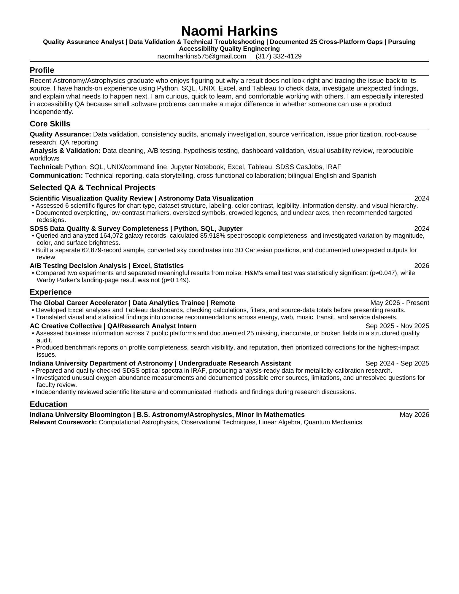

Resume
Quality assurance and data resume
This one-page version is tailored to quality roles and is based on documented research, analytics, and cross-platform audit work. It does not claim direct assistive-technology testing.

Resume
This one-page version is tailored to quality roles and is based on documented research, analytics, and cross-platform audit work. It does not claim direct assistive-technology testing.
